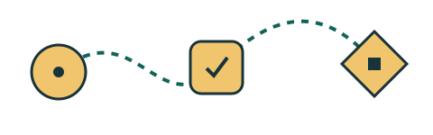

CRIATIVIDADE
Caderno de ideias
Transforme observações do cotidiano em um pequeno caderno visual.
- Tempo total
- 6 horas
- Nível
- Iniciante
PEQUENOS PASSOS, IDEIAS CONCRETAS
Oficinas práticas para adultos curiosos. Escolha um tema e organize seu tempo para aprender fazendo.
Explorar oficinasProtótipo fictício. Sem inscrições ou pagamentos.

O próximo passo pode ser pequeno.
ESCOLHA SEU PONTO DE PARTIDA
Três oficinas fictícias, com tempo total e nível visíveis antes de planejar.
3 oficinas
CRIATIVIDADE
Transforme observações do cotidiano em um pequeno caderno visual.
TECNOLOGIA
Organize uma pequena tabela e conte uma história com seus números.
CRIATIVIDADE
Estruture uma narrativa curta e pratique como compartilhá-la.
DO INTERESSE À PRÁTICA
Escolha uma oficina, informe quantas horas pode dedicar por semana e veja um plano local. A estimativa divide o tempo total pela disponibilidade e arredonda para semanas inteiras.
Nenhuma informação é enviada. Este protótipo não oferece cursos reais, vagas ou certificados.